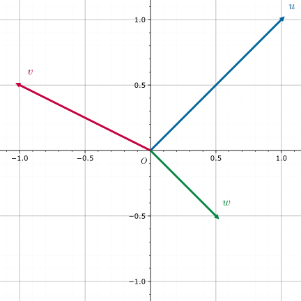

Cơ sở (Basis)
Gợi nhớ lại khái niệm vectơ cơ sở trong hình học không gian phổ thông, ta có thể tìm được một bộ vectơ cơ sở \(\boldsymbol{i}\), \(\boldsymbol{j}\), \(\boldsymbol{k}\) trong không gian Euclid 3 chiều, sau đó mọi vectơ trong không gian đều biểu diễn được theo bộ này. Nói cách khác, ta có thể dùng hữu hạn vectơ cơ sở để mô tả không gian 3 chiều vô hạn — đủ để thấy tầm quan trọng của vectơ cơ sở.
Không gian Euclid 3 chiều là một không gian tuyến tính đặc biệt, và khái niệm vectơ cơ sở trong không gian này được khái quát thành cơ sở tuyến tính trong không gian tuyến tính.
Trong OI, ứng dụng liên quan đến cơ sở tuyến tính thường chỉ xét hai loại không gian: không gian tuyến tính thực \(n\) chiều \(\mathbf{R}^n\) và không gian tuyến tính trên trường Boole \(\mathbf{Z}_2^n\). Ta sẽ trình bày chi tiết ở mục Ứng dụng. Nếu bạn chưa quen đại số tuyến tính, nên đọc từ phần ứng dụng.
Sau đây sẽ bắt đầu từ không gian tuyến tính tổng quát để giới thiệu cơ sở tuyến tính và các tính chất thường gặp.
Kiến thức trước: Không gian tuyến tính.
Cơ sở tuyến tính là một bộ cơ sở của không gian tuyến tính, là công cụ quan trọng khi nghiên cứu không gian tuyến tính.
Định nghĩa
Gọi một tập con tuyến tính độc lập cực đại của không gian tuyến tính \(V\) là một Hamel basis hay cơ sở tuyến tính, gọi tắt là cơ sở.
Quy ước cơ sở của không gian tuyến tính \(\{\theta\}\) là tập rỗng.
Có thể chứng minh mọi không gian tuyến tính đều tồn tại cơ sở1. Ta định nghĩa số chiều của không gian tuyến tính \(V\) là số phần tử (hoặc lực lượng) của cơ sở tuyến tính, ký hiệu \(\dim V\).
Tính chất
-
Với không gian tuyến tính hữu hạn chiều \(V\), giả sử \(\dim V = n\), thì:
-
Mọi \(n+1\) vectơ trong \(V\) đều tuyến tính phụ thuộc.
-
Mọi \(n\) vectơ tuyến tính độc lập trong \(V\) đều là một cơ sở của \(V\).
-
Nếu mọi vectơ trong \(V\) đều biểu diễn tuyến tính được bởi bộ \(a_1,a_2,\dots,a_n\) thì bộ đó là một cơ sở của \(V\).
Chứng minh
Lấy một cơ sở \(b_1,b_2,\dots,b_n\) của \(V\). Theo giả thiết, \(b_1,b_2,\dots,b_n\) đều biểu diễn tuyến tính được bởi \(a_1,a_2,\dots,a_n\), nên
\[ n=\operatorname{rank}\{b_1,b_2,\dots,b_n\}\leq\operatorname{rank}\{a_1,a_2,\dots,a_n\}\leq n \]Do đó \(\operatorname{rank}\{a_1,a_2,\dots,a_n\}=n\)
-
Mọi bộ vectơ tuyến tính độc lập \(a_1,a_2,\dots,a_m\) trong \(V\) đều có thể bổ sung thêm một số vectơ để trở thành một cơ sở của \(V\).
-
-
(Công thức số chiều của tổng và giao) Với \(V_1,V_2\) là các không gian tuyến tính hữu hạn chiều trên \(\Bbb{P}\) và \(V_1+V_2\), \(V_1\cap V_2\) cũng hữu hạn chiều, thì \(\dim V_1+\dim V_2=\dim(V_1+V_2)+\dim(V_1\cap V_2)\).
Chứng minh
Đặt \(\dim V_1=n_1\),\(\dim V_2=n_2\),\(\dim(V_1\cap V_2)=m\).
Lấy một cơ sở \(a_1,a_2,\dots,a_m\) của \(V_1\cap V_2\) và mở rộng thành cơ sở của \(V_1\) và \(V_2\): \(a_1,a_2,\dots,a_m,b_1,b_2,\dots,b_{n_1-m}\) và \(a_1,a_2,\dots,a_m,c_1,c_2,\dots,c_{n_2-m}\).
Chỉ cần chứng minh bộ \(a_1,a_2,\dots,a_m,b_1,b_2,\dots,b_{n_1-m},c_1,c_2,\dots,c_{n_2-m}\) tuyến tính độc lập.
Giả sử \(\sum_{i=1}^m r_ia_i+\sum_{i=1}^{n_1-m} s_ib_i+\sum_{i=1}^{n_2-m} t_ic_i=\theta\).
Khi đó \(\sum_{i=1}^{n_2-m} t_ic_i=-\sum_{i=1}^m r_ia_i-\sum_{i=1}^{n_1-m} s_ib_i\).
Vế trái thuộc \(V_2\), vế phải thuộc \(V_1\), nên cả hai cùng thuộc \(V_1\cap V_2\). Do đó \(\sum_{i=1}^{n_2-m} t_ic_i=\sum_{i=1}^m k_ia_i\).
Suy ra \(t_1=t_2=\dots=t_{n_2-m}=k_1=k_2=\dots=k_m=0\), kéo theo \(r_1=r_2=\dots=r_m=s_1=s_2=\dots=s_{n_1-m}=t_1=t_2=\dots=t_{n_2-m}=0\).
-
Với \(V_1,V_2\) là các không gian tuyến tính hữu hạn chiều trên \(\Bbb{P}\) và \(V_1+V_2\), \(V_1\cap V_2\) cũng hữu hạn chiều, thì các mệnh đề sau tương đương:
-
\(V_1+V_2=V_1\oplus V_2\).
-
\(\dim V_1+\dim V_2=\dim(V_1+V_2)\).
-
Nếu \(a_1,a_2,\dots,a_n\) là cơ sở của \(V_1\), \(b_1,b_2,\dots,b_m\) là cơ sở của \(V_2\), thì \(a_1,a_2,\dots,a_n,b_1,b_2,\dots,b_m\) là cơ sở của \(V_1+V_2\).
Note
Hai mệnh đề 1, 3 có thể mở rộng cho không gian tuyến tính vô hạn chiều.
-
Ví dụ
Xét cơ sở của \(\Bbb{R}^2\).
-
Như hình

\(u,v\) là một cơ sở.
-
Như hình

\(u,v\) là một cơ sở.
-
Như hình

\(u,v\) không phải là cơ sở vì \(u=-v\).
-
Như hình

\(u,v,w\) không phải là cơ sở vì \(u+4v+6w=\theta\).
Cơ sở trực giao và cơ sở trực chuẩn
Nếu một cơ sở \(B\) của không gian tuyến tính \(V\) thỏa \(\forall b,b'\in B,~(b,b')\ne 0\iff b=b'\) (tức đôi một trực giao), thì gọi là cơ sở trực giao.
Nếu \(B\) là cơ sở trực giao và còn thỏa \(\forall b\in B,~|b|=\sqrt{(b,b)}=1\) thì gọi là cơ sở trực chuẩn.
Mọi cơ sở của không gian tuyến tính hữu hạn chiều \(V\) đều có thể biến đổi thành cơ sở trực giao bằng Schmidt trực giao hóa.
Ứng dụng
Dựa trên phần trước, ta có thể dùng cơ sở tuyến tính để:
- Tính hạng của một nhóm vectơ;
- Từ một nhóm vectơ, tìm một bộ tuyến tính độc lập cực đại (hoặc cơ sở của không gian do chúng sinh ra);
- Chèn thêm một số vectơ vào một nhóm vectơ đã cho, rồi tìm một bộ tuyến tính độc lập cực đại (hoặc cơ sở) trong nhóm mới;
- Với một bộ tuyến tính độc lập cực đại (hoặc cơ sở), kiểm tra một vectơ có biểu diễn tuyến tính theo nó hay không;
- Với một bộ tuyến tính độc lập cực đại (hoặc cơ sở), tìm các phần tử đặc biệt trong không gian sinh ra (như phần tử lớn nhất, nhỏ nhất, v.v.).
Trong OI, cơ sở tuyến tính trong \(\mathbf{R}^n\) gọi là cơ sở tuyến tính thực, còn trong \(\mathbf{Z}_2^n\) gọi là cơ sở tuyến tính XOR.
Tip
Phép cộng trong \(\mathbf{Z}_2\) là XOR, phép nhân là AND, có thể chứng minh \(\mathbf{Z}_2\) là một trường.
Có thể chứng minh hệ \((\mathbf{Z}_2^n,+,\cdot,\mathbf{Z}_2)\) là một không gian tuyến tính, trong đó:
Tức là cộng là XOR, nhân vô hướng là AND.
Lấy cơ sở XOR làm ví dụ, từ một tập dãy Boole \(\{x_1,\dots,x_m\}\) ta có thể xây dựng một cơ sở XOR \(B=\{b_1,\dots,b_n\}\) có các tính chất:
- XOR của mọi tập con không rỗng của \(B\) đều khác \(0\);
- Với mọi \(x\) trong \(X\), có thể lấy một số phần tử trong \(B\) sao cho XOR bằng \(x\);
- Với mọi tập \(B'\) thỏa hai điều trên, số phần tử của \(B'\) không nhỏ hơn của \(B\).
Ta có thể dùng cơ sở XOR để:
- Kiểm tra một số có biểu diễn được như XOR của một tập con hay không;
- Đếm số cách biểu diễn một số như XOR của một tập con;
- Tìm XOR lớn nhất/nhỏ nhất/thứ \(k\) lớn nhất/thứ \(k\) nhỏ nhất;
- Xác định thứ hạng của một số trong tập XOR của các tập con.
Cách xây dựng
Cơ sở XOR và cơ sở thực về bản chất không khác nhau, nên dưới đây lấy XOR làm ví dụ; phiên bản thực chỉ cần chỉnh sửa nhỏ.
Phương pháp tham lam
Chuyển từng số \(p\) sang nhị phân, quét từ bit cao xuống thấp. Nếu bit thứ \(x\) là \(1\) và \(a_x\) chưa có, gán \(a_x \leftarrow p\) và kết thúc. Nếu đã có, gán \(p\leftarrow p~\text{xor}~a_x\) và tiếp tục.
Để truy vấn XOR lớn nhất của một số phần tử, chỉ cần quét từ bit cao xuống thấp, nếu XOR với \(a_x\) làm kết quả lớn hơn thì XOR vào.
Tại sao đúng? Vì quét từ cao xuống, nếu ở bit \(i\) có thể đảm bảo bit \(i\) của đáp án là \(1\) thì về sau không thể thay đổi bit đó nữa.
XOR nhỏ nhất của một tập con là phần tử nhỏ nhất trong cơ sở.
Kiểm tra một số có biểu diễn được hay không: giống như thao tác chèn, nếu cuối cùng \(p\) bị XOR thành \(0\) thì biểu diễn được.
Code (Luogu P3812 【模板】线性基)
1 2 3 4 5 6 7 8 9 10 11 12 13 14 15 16 17 18 19 20 21 22 23 24 25 26 27 28 29 30 31 32 33 34 35 36 | |
Phương pháp khử Gauss
Khử Gauss tương đương nhìn từ hệ phương trình tuyến tính để xây cơ sở, tính đúng đắn hiển nhiên.
Code (Luogu P3812 【模板】线性基)
1 2 3 4 5 6 7 8 9 10 11 12 13 14 15 16 17 18 19 20 21 22 23 24 25 26 27 28 29 30 31 32 33 34 35 36 37 38 39 | |
Tính chất
Cơ sở xây bằng tham lam có:
- Không có tập con nào XOR bằng \(0\).
- Bit cao nhất của các phần tử trong cơ sở đều khác nhau.
Cơ sở xây bằng khử Gauss có:
-
Ma trận sau khử là ma trận bậc thang rút gọn theo hàng.
Tính chất này bao gồm hai tính chất của tham lam.
Nếu chưa hiểu, xem Khử Gauss.
Ví dụ:
1 2 | |
Biểu diễn nhị phân:
1 2 3 4 5 | |
Cơ sở theo tham lam:
1 2 3 4 5 6 7 8 9 10 | |
Cơ sở theo khử Gauss:
1 2 3 4 5 6 7 8 9 10 | |
Đây là tính chất rất hữu ích. Ví dụ: tìm XOR lớn nhất của một tập con. Với cơ sở tham lam, cần tham lam lại; nếu bit hiện tại của ans là 0 thì XOR sẽ tốt hơn, còn nếu là 1 thì không. Với cơ sở Gauss, chỉ cần XOR tất cả phần tử trong cơ sở.
Các bài cổ điển khác (kiểm tra có biểu diễn được không, tìm XOR lớn thứ \(k\), v.v.) cũng thuận lợi hơn với cơ sở Gauss.
Độ phức tạp
Giả sử độ dài vectơ là \(n\), số lượng là \(m\), thì độ phức tạp là \(O(nm)\). Khử Gauss có hằng số lớn hơn.
Với cơ sở thực, độ phức tạp là \(O(n^2m)\).
Hợp cơ sở tuyến tính
Hợp chỉ cần chèn thô một cơ sở vào cơ sở còn lại. Mỗi lần hợp tốn \(O(n^2)\) (cơ sở XOR) hoặc \(O(n^3)\) (cơ sở thực).
Giao cơ sở tuyến tính
Giao cơ sở tuyến tính, chính xác là tìm cơ sở của giao của hai không gian sinh. Phần này giới thiệu hai thuật toán. Cả hai đều có độ phức tạp \(O(n^2)\) (XOR) hoặc \(O(n^3)\) (thực).
Thuật toán ngây thơ
Gọi hai cơ sở là \(\alpha\) và \(\beta\). Thuật toán là chỉnh sửa từ hợp cơ sở:
- Thử chèn từng vectơ \(\beta_j\) vào \(\alpha\) bằng tham lam, khởi tạo giao \(\gamma\) rỗng.
- Khi chèn, cần ghi nhận “đóng góp” của các phần tử trong \(\beta\). Cụ thể, duy trì một vectơ mới \(b\) khởi tạo là \(\beta_j\); nếu trong quá trình chèn, ta XOR với \(a_x\) thì đóng góp \(b\) cũng XOR với \(b_x\) tương ứng.
- Nếu chèn thành công, tại vị trí \(x\) lưu \(\beta'_j\) thì cập nhật \(b_x\) thành đóng góp \(b\) dẫn tới \(\beta'_j\).
- Nếu chèn thất bại, đưa đóng góp \(b\) vào \(\gamma\).
Kết quả \(\gamma\) là cơ sở giao (đồng thời cũng thu được cơ sở hợp).
Giải thích thuật toán
Gọi cơ sở sau khi hợp là \(\{\alpha_1,\cdots,\alpha_m,\beta'_{j_1},\cdots,\beta'_{j_\ell}\}\), trong đó \(\beta'_{j_k}\) là vectơ cuối cùng khi chèn \(\beta_{j_k}\). Khi đó \(\{\alpha_1,\cdots,\alpha_m,\beta_{j_1},\cdots,\beta_{j_\ell}\}\) cũng là một cơ sở hợp. Đặt \(\beta^+\) là \(\{\beta_{j_1},\cdots,\beta_{j_\ell}\}\), cơ sở hợp là \(\alpha\cup\beta^+\). Mỗi vectơ \(c\) trong không gian hợp biểu diễn duy nhất dạng
với \(a\in\operatorname{span}\alpha\) và \(b\in\operatorname{span}\beta^+\). Phần \(b\) chính là “đóng góp” mà thuật toán cố gắng ghi lại: nghiêm ngặt là đóng góp của những vectơ chèn thành công.
Với chèn thành công, \(b\) cuối cùng chính là phần \(b\) trong phân rã. Giả sử \(\beta_j\in\beta^+\). Ban đầu \(\beta_j=0\oplus\beta_j\) là phân rã đúng. Khi cập nhật \(\beta'_j=a\oplus b\) thành \(\beta'_j\oplus c_x\), vì \(\beta'_j\oplus c_x=(a\oplus a_x)\oplus(b\oplus b_x)\), chỉ cần cập nhật \(b\leftarrow b\oplus b_x\) để giữ phân rã đúng. Suy ra \(b\) cuối cùng chính là phần \(b\).
Với chèn thất bại, biến cần chèn sẽ về \(0\), đóng góp \(b\) được chèn vào \(\gamma\). Lặp lại luận chứng sẽ thấy luôn có \(\beta'_j=a\oplus b\) với \(a\in\operatorname{span}\alpha\), nhưng \(b\) không còn thuộc \(\operatorname{span}\beta^+\). Vì ban đầu \(\beta_j=0\oplus\beta_j\) với \(\beta_j\notin\beta^+\), còn các XOR sau đều thuộc \(\operatorname{span}\beta^+\). Do đó \(b\oplus\beta_j\in\operatorname{span}\beta^+\).
Tại sao chèn các \(b\) thất bại vào \(\gamma\) cho cơ sở giao? Khi chèn thất bại, cuối cùng \(0=a\oplus b\), trong đó \(a\in\operatorname{span}\alpha\), \(b\in\operatorname{span}\beta\), nên \(b=a\in\operatorname{span}\alpha\cap\operatorname{span}\beta\). Ngược lại, với mọi \(c\) trong giao, do \(c\in\operatorname{span}\beta\), ta có $$ c = \bigoplus_{\beta_j\in\beta}\lambda_j\beta_j, $$ với \(\lambda_j\in\{0,1\}\). Với mỗi \(\beta_j\notin\beta^+\), ký hiệu đóng góp bị chèn vào \(\gamma\) là \(b_j\), khi đó $$ c\oplus\bigoplus_{\beta_j\notin\beta^+}\lambda_jb_j = \bigoplus_{\beta_j\in\beta+}\lambda_j\beta_j+\bigoplus_{\beta_j\notin\beta+}\lambda_j(\beta_j\oplus b_j). $$ Vế trái nằm trong giao, nên viết được bằng tổ hợp tuyến tính của \(\alpha\). Vế phải là tổ hợp tuyến tính của \(\beta^+\), do \(\alpha\cup\beta^+\) độc lập, nên mọi hệ số đều \(0\), suy ra \(c=\bigoplus_{\beta_j\notin\beta^+}\lambda_jb_j\in\operatorname{span}\{b_1,\cdots,b_j\}\). Vậy các \(b\) thất bại sinh ra giao.
Theo giải thích này, mục tiêu của việc duy trì đóng góp \(b\) là duy trì phân rã \(a\oplus b\); và khi chèn thất bại thì luôn có \(a=b\). Do đó dù duy trì đóng góp của \(\alpha\) hay \(\beta\) đều đúng. Nếu muốn duy trì đóng góp của \(\alpha\), chỉ cần đổi khởi tạo: mỗi \(\alpha_i\) có đóng góp ban đầu là \(\alpha_i\), còn \(\beta_j\) có đóng góp ban đầu là \(0\).
Mã bài mẫu:
Code (Library Checker Intersection of \(\mathbf F_2\) vector spaces)
1 2 3 4 5 6 7 8 9 10 11 12 13 14 15 16 17 18 19 20 21 22 23 24 25 26 27 28 29 30 31 32 33 34 35 36 37 38 39 40 41 42 43 44 45 46 47 48 49 50 51 52 53 54 55 56 57 58 59 60 61 62 63 64 65 66 67 68 69 70 71 72 73 74 75 76 77 78 79 80 81 82 83 84 85 86 87 88 89 | |
Thuật toán Zassenhaus
Một cách tương đương là thuật toán Zassenhaus, cũng đồng thời tính được hợp và giao. Độ phức tạp như trên.
Các bước:
- Khởi tạo cơ sở \(\gamma\) cho vectơ độ dài \(2n\), rỗng, các vectơ dạng \((a,b)\), với \(a,b\) độ dài \(n\);
- Chèn các \(\alpha_i\) dưới dạng \((\alpha_i,\alpha_i)\) vào \(\gamma\);
- Chèn các \(\beta_j\) dưới dạng \((\beta_j,0)\) vào \(\gamma\);
- Cuối cùng, trong cơ sở \(\gamma\), các vectơ \((c_k,d_k)\) có \(c_k\ne 0\) thì phần \(c_k\) tạo thành cơ sở của hợp, còn các vectơ có \(c_k=0\) thì phần \(d_k\) tạo thành cơ sở của giao.
Cách xây cơ sở trong thuật toán có thể dùng tham lam hoặc khử Gauss, miễn là \(\gamma\) ở dạng bậc thang.
So sánh với thuật toán ngây thơ, Zassenhaus dựa trên tham lam tương đương với việc duy trì đóng góp của \(\alpha\). Nếu chèn \((\alpha_i,0)\) trước rồi \((\beta_j,\beta_j)\) sau, thì tương đương duy trì đóng góp của \(\beta\). Do các bước khử tương đương, tính đúng đắn vẫn giữ.
Có thể đưa thêm một chứng minh đại số tổng quát:
Chứng minh đúng
Gọi \(V\) là một không gian tuyến tính, với các không gian con \(U=\operatorname{span}\alpha\) và \(W=\operatorname{span}\beta\). Thuật toán tương đương với việc khử bậc thang để tìm cơ sở của
Gọi cơ sở thu được là \(\gamma\). Các phần tử \((c_k,d_k)\) được chia theo \(c_k\ne 0\) hay không. Xét ánh xạ chiếu \(\pi:H\rightarrow V\) với \(\pi(a,b)=a\). Khi đó \(\pi(H)=U+W\) và
Theo định lý về ánh xạ tuyến tính, ta có \(\dim H = \dim\pi(H)+\dim\ker\pi = \dim(U+W)+\dim(U\cap W)\).
Vì ma trận bậc thang rút gọn, số hàng có \(c_k\ne 0\) đúng bằng hạng của \(\alpha\cup\beta\), tức \(\dim(U+W)\); tập các \(c_k\) này tạo cơ sở của \(U+W\). Số hàng còn lại đúng bằng \(\dim(U\cap W)\) và có \(c_k=0\). Với các \(d_k\) này, ta có \((0,d_k)\in\ker\pi\) nên \(d_k\in U\cap W\), và vì các hàng độc lập nên các \(d_k\) độc lập. Do đó \(d_k\) tạo thành cơ sở của giao.
Mã bài mẫu:
Code (Library Checker Intersection of \(\mathbf F_2\) vector spaces)
1 2 3 4 5 6 7 8 9 10 11 12 13 14 15 16 17 18 19 20 21 22 23 24 25 26 27 28 29 30 31 32 33 34 35 36 37 38 39 40 41 42 43 44 45 46 47 48 49 50 51 52 53 54 55 56 57 58 59 60 61 62 63 64 | |
Lưu ý: khi xuất, chỉ cần xét các vectơ có \(n\) bit đầu là \(0\).
Mở rộng: cơ sở tuyến tính tiền tố
Phần này chỉ xét cơ sở XOR và giả sử mỗi vectơ lưu trong \(O(1)\) bộ nhớ, mỗi thao tác \(O(1)\).
Với nhiều truy vấn XOR lớn nhất trên đoạn, cách phổ biến là cây mèo kết hợp cơ sở, độ phức tạp \(O(nm\log m+n^2q)\). Một cách khác là cơ sở tiền tố (time-stamp basis), giảm xuống \(O(n(m+q))\).
Cơ sở tiền tố cho phép với mỗi tiền tố của dãy, duy trì cơ sở của mọi hậu tố; từ đó truy vấn cơ sở của đoạn. Lưu ý các hậu tố \([j,i]\) tạo thành chuỗi lồng nhau, nên tối đa chỉ có \(n\) cơ sở khác nhau và có thể thu được bằng cách thêm dần vectơ vào tập rỗng. Vì vậy, với mỗi vectơ mới \(v\), chỉ cần gán “mốc thời gian” \(t\) (chỉ số lớn nhất) để lưu trong \(O(n)\) không gian. Khi truy vấn \([j,i]\), chỉ giữ các vectơ có \(t\ge j\).
Gọi mốc thời gian của \(v\) là \(t\). Mỗi vectơ trong cơ sở biểu diễn được bởi XOR của một số phần tử gốc, như \(v_{i_1}\oplus\cdots\oplus v_{i_k}\). Trong các biểu diễn đó, giá trị lớn nhất của chỉ số nhỏ nhất chính là \(t\):
Điều này gợi ý: để duy trì \(t(v)\), chỉ cần tham lam thay vectơ cũ bằng vectơ mới nếu có thể.
Dựa trên tham lam, ta điều chỉnh:
- Với mỗi \(a_x\) trong cơ sở, lưu thêm \(t_x\), ban đầu \(0\);
- Khi thêm vectơ thứ \(i\), vẫn quét từ bit cao xuống thấp, đồng thời biết thời gian hiện tại \(i\);
- Nếu bit \(x\) là \(1\), so sánh \(t_x\) và \(i\):
- Nếu \(i>t_x\), tức vectơ mới “mới hơn”, thì gán \(a_x=v\), cập nhật \(t_x=i\), và tiếp tục chèn với \(a_x\oplus v\) cùng thời gian cũ \(t_x\);
- Nếu \(i<t_x\), giữ nguyên \(a_x,t_x\), và chèn tiếp với \(v\oplus a_x\).
Tức là ưu tiên vectơ mới hơn. Khi cập nhật \(a_x\), không thể lưu \(a_x\oplus v\) vào vị trí \(x\) vì thời gian của nó là \(\min\{t(a_x),t(v)\}=t(a_x)<t(v)\). Vì lý do tương tự, khử Gauss không còn phù hợp để xây cơ sở tiền tố.
Mã bài mẫu:
Code (Codeforces 1100F Ivan and Burgers)
1 2 3 4 5 6 7 8 9 10 11 12 13 14 15 16 17 18 19 20 21 22 23 24 25 26 27 28 29 30 31 32 33 34 35 36 37 38 39 40 41 42 43 44 45 46 47 48 49 50 51 52 53 54 55 56 57 58 59 60 61 62 | |
Nếu cần truy vấn online, có thể lưu cơ sở tiền tố tại mỗi vị trí bằng \(O(mn)\) bộ nhớ để truy vấn sau (tương đương “persistent” cơ sở). Nếu cần tính chất của cơ sở Gauss, xử lý thêm khi truy vấn.
Bài tập
- Luogu P3812【模板】线性基
- Acwing 3164. 线性基
- SGU 275 to xor or not xor
- HDU 3949 XOR
- HDU 6579 Operation
- Luogu P4151 [WC2011] 最大 XOR 和路径
- Library Checker - Intersection of \(\mathbf F_2\) vector spaces
- AtCoder Grand Contest 045 A - Xor Battle
- Codeforces 1100F Ivan and Burgers
- Luogu P3292 [SCOI2016] 幸运数字
Tài liệu tham khảo và chú thích
- 丘维声，高等代数（下）．清华大学出版社．
- Basis (linear algebra) - Wikipedia
- Vector Basis -- from Wolfram MathWorld
- Zassenhaus algorithm - Wikipedia
Last updated on this page:, Update history
Found an error? Want to help improve? Edit this page on GitHub!
Contributors to this page:cesonic, Enter-tainer, Great-designer, Ir1d, ksyx, lychees, MegaOwIer, RUIN-RISE, wjy-yy, rsdbkhusky, ouuan, Menci, Tiphereth-A
All content on this page is provided under the terms of the CC BY-SA 4.0 and SATA license, additional terms may apply